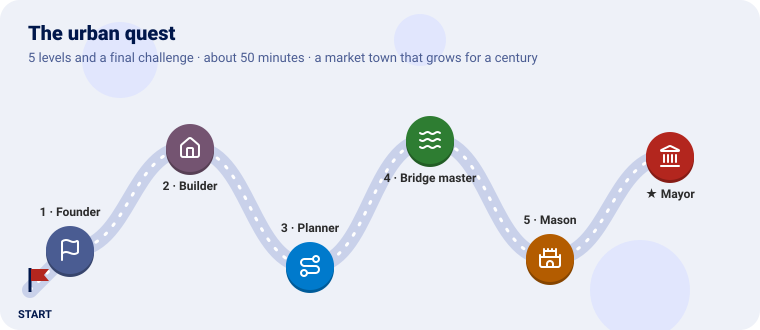
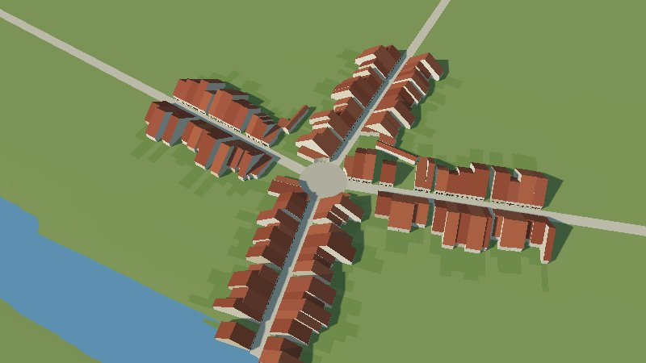
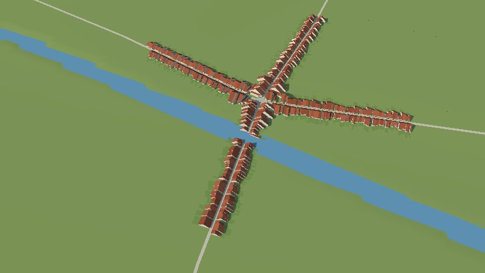
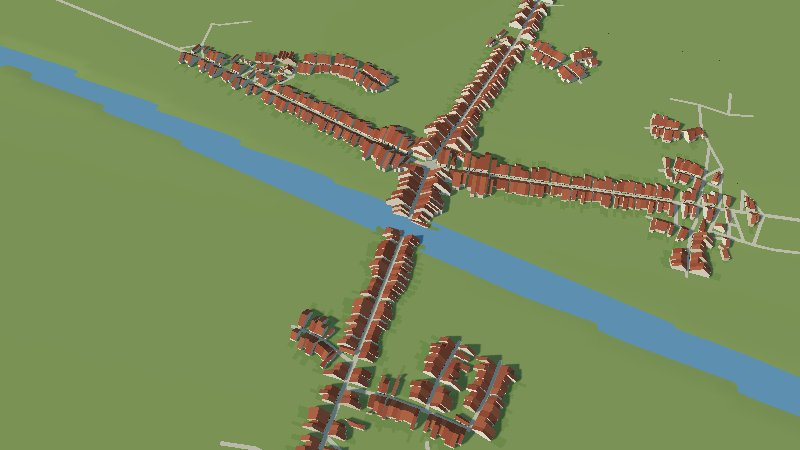
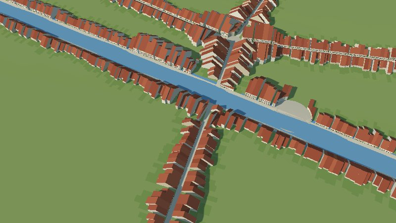
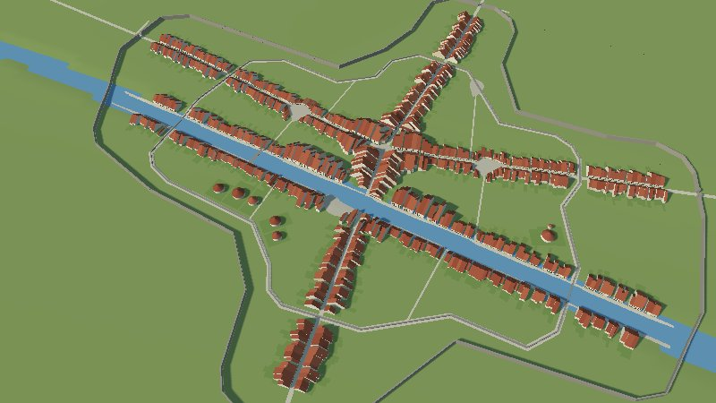
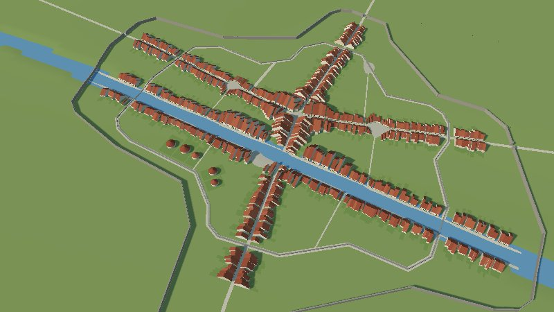
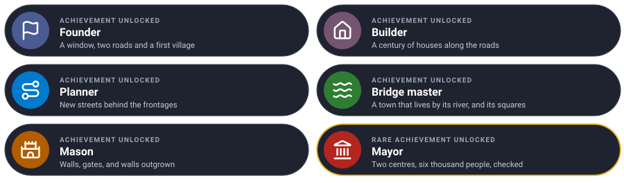

Grow a market town on a river for a hundred years, one level at a time. Each level teaches one piece of the urban plugin and ends with the town in 3D.

On a gentle plain crossed by a river and two old roads, a village of 300 people is founded where the roads meet. It grows along them, opens streets of its own, takes to its river with quays, bridges and squares, and builds a wall it later outgrows, until six thousand people live in it.
Every level has the same shape: the idea (explained with something from everyday life), the rules, a checkpoint to know it works, and an optional bonus.
You need Go 1.25 and GEOS (sudo apt install libgeos-dev, brew install geos): the plugin cuts
plots and walls with it. Clone the projects side by side and make a folder for the quest:
git clone https://github.com/akrck02/go-renderer
git clone https://github.com/akrck02/go-scene-builder
git clone https://github.com/akrck02/go-simulator
git clone https://github.com/akrck02/go-simulator-terrain
git clone https://github.com/akrck02/go-simulator-urban
mkdir town && cd town
go mod init example.com/town
plain/main.go writes the ground (4 × 4 km, a river valley, a hill to the north-west) in the
relief format the terrain plugin reads:
// Command plain writes the ground a town grows on: a gentle plain, 4 × 4 km, lower along a river
// that crosses it from west to east, with a low hill in the north-west. relieve.json says the
// grid's size and place in kilometres; relieve.f32 holds a height in metres per cell.
package main
import (
"encoding/binary"
"encoding/json"
"log"
"math"
"os"
)
func main() {
const (
columns, rows = 200, 200 // cells
cell = 0.02 // kilometres a side: 20 m
west, north = -2.0, 2.0
)
heights := make([]float32, 0, columns*rows)
for row := range rows {
for column := range columns {
east := west + (float64(column)+0.5)*cell
northing := north - (float64(row)+0.5)*cell
heights = append(heights, float32(height(east, northing)))
}
}
header, _ := json.Marshal(map[string]any{"columns": columns, "rows": rows, "cell": cell, "west": west, "north": north, "units": "km"})
if err := os.WriteFile("relieve.json", header, 0o644); err != nil {
log.Fatal(err)
}
file, err := os.Create("relieve.f32")
if err != nil {
log.Fatal(err)
}
defer file.Close()
if err := binary.Write(file, binary.LittleEndian, heights); err != nil {
log.Fatal(err)
}
}
// height rises gently to the north, dips along the river and swells into a hill to the north-west.
func height(east, north float64) float64 {
river := 0.1 * math.Sin(east*2) // the river's line, a little winding
valley := -6 * math.Exp(-math.Pow((north-river)/0.25, 2))
hill := 35 * math.Exp(-(math.Pow(east+1.2, 2)+math.Pow(north-1.2, 2))/0.4)
return 40 + 4*north + valley + hill
}
go run ./plain
A run without a window writes the town as GeoJSON: buildings with their height, parcels, streets,
squares, walls, gates and the river. go-scene-builder turns that into a 3D scene with a style.
town.yaml:
units: m
chunk: 0.5
environment: {sun: [220, 35]}
terrain: {color: "#8fa35a"}
relations:
facing: {when: {kind: street}, reach: 15}
rules:
- when: {kind: parcel}
shape: {role: ground, lift: 0.1}
color: "#7f9a4e"
- when: {kind: street}
shape: {role: ground, width: "width * 1000", lift: 0.3}
color: "#d8cdb4"
- when: {kind: square}
shape: {role: ground, lift: 0.35}
color: "#c9bfa8"
material: {pattern: cobbles, scale: 0.4}
- when: {kind: river}
shape: {role: water, width: "width * 1000"}
- when: {kind: bridge}
shape: {role: line, follow: level, thickness: "width * 1000", height: 0.5}
color: "#9c9486"
- when: {kind: building}
shape: {role: volume, height: "height * 1000"}
walls: {color: ["#e9dfc9", "#efe4cf", "#e2d2b4", "#f1ead9"]}
roof: {recipe: gable, pitch: 38, ridge: along_street, eaves: 0.3, color: ["#a4553a", "#9a4b33", "#b0613f"]}
facade: {door: {color: "#5b3a26"}, windows: {shutters: ["#2f5d50", "#7a3b2e"]}}
- when: {kind: wall}
shape: {role: line, height: "height * 1000", thickness: 2.5}
color: "#a59c8c"
material: {pattern: masonry, scale: 0.6}
battlements: {height: 1, width: 1, gap: 1}
openings: {where: {kind: street, class: road}, width: 8}
decorate: [{recipe: gate_towers, size: 6, height: 12}]
- when: {kind: old_wall}
shape: {role: line, height: 4, thickness: 2}
color: "#9a9182"
and look/main.go (from the terrain quest),
which tells the builder the snapshot’s map is in kilometres with z to the south:
// Command look turns a snapshot's entities into a map go-scene-builder reads: the snapshot writes
// [x, z] in kilometres, with z to the south, and the builder needs to be told so.
//
// go run ./look "results/island 100.geojson" map.geojson
package main
import (
"encoding/json"
"log"
"os"
)
func main() {
content, err := os.ReadFile(os.Args[1])
if err != nil {
log.Fatal(err)
}
var collection map[string]any
if err := json.Unmarshal(content, &collection); err != nil {
log.Fatal(err)
}
properties, _ := collection["properties"].(map[string]any)
if properties == nil {
properties = map[string]any{}
}
properties["units"], properties["axes"] = "km", "east-south"
collection["properties"] = properties
out, _ := json.Marshal(collection)
if err := os.WriteFile(os.Args[2], out, 0o644); err != nil {
log.Fatal(err)
}
}
After every run, for year 100:
go run ./look "results/town 100.geojson" map.geojson
go run ../go-scene-builder/cmd/build-scene -map map.geojson -relief "results/town 100 elevation.json" -style town.yaml -out town.glb
go run ../go-renderer/cmd/visor town.glb
The pictures were taken with -zoom 0.25 -look-at 0,0 (and closer where it says).
| Mission | Pieces | Time |
|---|---|---|
| A village where two roads meet | city, the inputs, nucleus, population, expand |
10 min |
A town needs somewhere to be and a reason to be there. The plugin reads the first from a map of inputs: the window it may grow in, the roads that already cross it, the river. The second is a population curve: how many people live there each year. Every year the town finds room for them, plot by plot, where they would most want to live: near the centre, on a street.
The city rule sets the town up and holds it; the other rules find it by its instance name.
inputs.geojson, in world kilometres [x, z]:
{"type": "FeatureCollection", "features": [
{"type": "Feature", "properties": {"role": "window"}, "geometry": {"type": "Polygon", "coordinates": [[[-1.5, -1.5], [1.5, -1.5], [1.5, 1.5], [-1.5, 1.5], [-1.5, -1.5]]]}},
{"type": "Feature", "properties": {"role": "river", "width": 0.03}, "geometry": {"type": "LineString", "coordinates": [[-2, 0.07], [-1, -0.09], [0, 0], [1, 0.09], [2, -0.07]]}},
{"type": "Feature", "properties": {"role": "road"}, "geometry": {"type": "LineString", "coordinates": [[-2, -0.4], [-0.6, -0.25], [0, -0.15], [0.7, -0.3], [2, -0.2]]}},
{"type": "Feature", "properties": {"role": "road"}, "geometry": {"type": "LineString", "coordinates": [[0.1, -2], [0.05, -0.6], [0, -0.15], [0.05, 0.4], [0.3, 2]]}}
]}
rules.yaml: the terrain plugin puts the plain in the world, and the urban plugin grows on it:
plugins:
- {name: terrain, command: [go, run, .], directory: ../go-simulator-terrain}
- {name: urban, command: [go, run, .], directory: ../go-simulator-urban}
stages:
- name: town
clock: {unit: year, from: -1, to: 10, step: 1}
snapshots: [10]
rules:
- rule: relief
with: {path: relieve.json, origin: [0, 0]}
- rule: city
name: market_town
with:
features: inputs.geojson
seed: 7
nucleus: [0, -0.15]
centres: [{at: [0, -0.15], weight: 1}]
population: {model: logistic, from_year: 0, from: 300, to_year: 100, to: 6000, ceiling: 7000}
max_floors: [{before: 50, floors: 2}, {floors: 3}]
- {rule: expand, with: {city: market_town}}
- {rule: indicators, with: {city: market_town, years: [10]}}
logistic growth starts slowly, speeds up and levels off under a ceiling.
go run ../go-simulator/cmd/simulate -rules rules.yaml -output results/
At year 10, a round little square where the roads meet, and houses along the roads near it, their doors on the street.

Learn more: Writing a scenario · The model
| Mission | Pieces | Time |
|---|---|---|
| A century of growth | densify, the clock, indicators |
6 min |
A town grows two ways: outwards, new houses on new plots (expand), and inwards, houses
rebuilt taller and closer as plots fill (densify), like a bookshelf that first gets new
shelves, then books squeezed in. max_floors says how tall houses may be in each period.
Run the whole century, with both rules:
clock: {unit: year, from: -1, to: 100, step: 1}
snapshots: [10, 50, 100]
rules:
- … relief and city as before …
- {rule: densify, with: {city: market_town}}
- {rule: expand, with: {city: market_town}}
- {rule: indicators, with: {city: market_town, years: [10, 50, 100]}}
By year 50 the town has stretched along all four roads, a street village, one house deep. In
results/events.jsonl, the indicators of year 100 count 6,000 inhabitants on about 42 hectares.

| Mission | Pieces | Time |
|---|---|---|
| Streets of its own, behind the frontages | open_streets_below, pruning, splitting |
6 min |
When the road frontages are taken, a town either keeps stretching along them, or opens new
streets behind them, like a tree growing branches. open_streets_below says when: a town
opens a street before building on frontages less wanted than this (0.3 makes street villages,
0.5–0.7 compact towns). Streets that stay empty are pruned; blocks that grow too large are split.
In the city’s with: open_streets_below: 0.6. And two rules that tidy the street network every
five years:
- {rule: prune_empty_streets, with: {city: market_town}, every: 5}
- {rule: split_large_blocks, with: {city: market_town}, every: 5}
New lanes branch off the roads, with blocks of houses between them: a town, not a cross.

| Mission | Pieces | Time |
|---|---|---|
| A town that lives by its river, with squares | river, squares, space_syntax |
8 min |
A river is a street of water: plots facing it are wanted, quays line it, bridges cross it where people need to. And where many paths cross, people stop: a square opens. To know where paths cross most, the town measures space syntax: how often each street lies on the shortest way between two places.
In the city’s with:
river: {reach: 0.25}
squares: {per_inhabitants: 1500}
and two rules:
- {rule: space_syntax, with: {city: market_town, samples: 200}, every: 5}
- {rule: squares, with: {city: market_town}, every: 5}
Close up (-zoom 0.12 -look-at 0,0.05): rows of houses along both banks where the road crosses, and
a square by the water. The snapshot now counts two squares.

| Mission | Pieces | Time |
|---|---|---|
| A wall, gates, and a wall outgrown | first_wall, the walls rule |
6 min |
A town walls itself when it has something to protect: here, once 2,500 people live in it. The
wall goes round the built town, with gates where roads leave. When the town spills past it, a
new, wider wall is built, and the old one stays as old_wall, like rings in a tree trunk.
In the city’s with: first_wall: {population: 2500}, and the rule, before the tidying ones:
- {rule: walls, with: {city: market_town}}
The style already draws wall with battlements and towers at the gates, and old_wall lower.
A wide wall round the town with towers where the roads go through, and the line of the first,
smaller wall inside it. The snapshot counts wall, old_wall and four gates.

Give the town a second centre north of the river, which starts to draw people in year 40 and takes thirty years to grow; and check the century: about six thousand people at the end (±10 %), and a wall.
Hint:
centrestakes several, each with aweight,grows_fromandgrows_for. Objectives go in the stage. Careful with commas in names: in{…}, a comma ends the value.
Try it on your own first, then compare with the solution.

centres: [{at: [0, -0.15], weight: 1}, {at: [0.1, 0.6], weight: 0.6, grows_from: 40, grows_for: 30}] objectives:
- {name: about six thousand people, at: 100, event: indicators, value: inhabitants, near: 6000, tolerance: 0.1}
- {name: walled, at: 100, count: {kind: wall}}
You founded a town, let it grow for a century by rules of where people want to live, and checked it came out as planned.
| Idea | Difficulty | Hint |
|---|---|---|
| Taller in the core | ⭐ | density and rare_floors (scenario) |
| Curvier streets | ⭐ | organic: {wander_degrees: 20} |
| Watch it grow live | ⭐⭐ | go-simulator/cmd/simulator with a scene_style (go-simulator’s rules files) |
| The town on an island of your own | ⭐⭐⭐ | The terrain and flora quests, with tree_nodes to clear the forest |
| You see | Why, and what to do |
|---|---|
city: at least one growth centre is needed |
Add centres: [{at: [x, z], weight: 1}] |
pkg-config: geos not found |
Install GEOS: libgeos-dev or geos |
| An objective’s name is cut short | A comma inside {…} ends the value: write the number in words, or quote the name |
| The town does not grow | The population curve starts after the clock, or the window is all obstacles |
| The town is mirrored in the viewer | The map was not run through look |